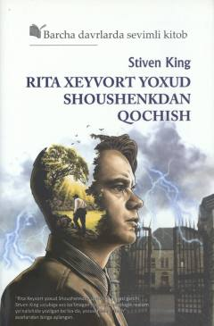

RXBegunoh mahkumning Shoushenk qamoqxonasidan qochish yo'lidagi kurashi haqidagi ta'sirli qissa.
Ushbu qissada umrbod qamoq jazosiga mahkum etilgan begunoh insonning Shoushenk qamoqxonasidagi hayoti va ozodlik uchun kurashi tasvirlanadi. Stiven Kingning ushbu asari psixologik realizm yo'nalishida yozilgan bo'lib, inson irodasining mustahkamligini ko'rsatib beradi.